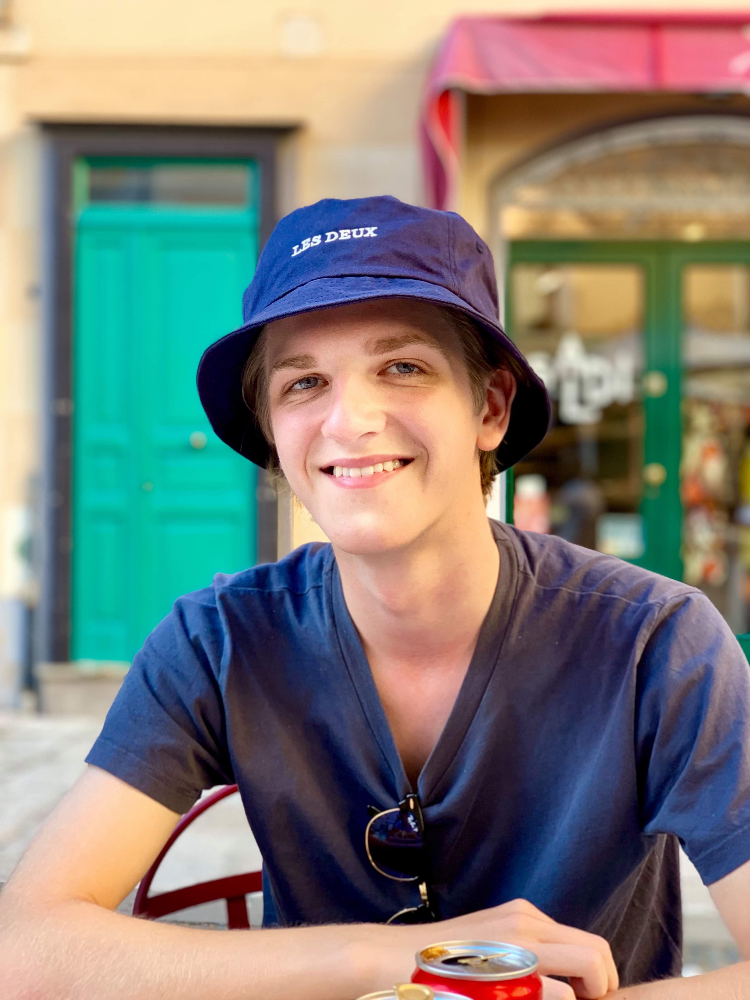

Hokus pokus nu er jeg endelig i fokus
Her vil du kunne læse om mig, hvilke uddannelser jeg har taget, jobs jeg har haft og nogle ekstra spændende informationer omkring mig, som links til sociale medier!
Om mig
Mit navn er Birk, jeg er 23 år og er født d. 16 april 2000. Jeg er født i København, men efter et år besluttede mine forældre sig for at flytte til Grønland. Her boede jeg efterfølgende i 2 år, indtil vi flyttede tilbage til Danmark. Da vi kom tilbage efter 2 år i ødemarken, synes mine forældre der var lidt for meget gang i storbyen. Derfor kiggede de efter hus i Storkøbenhavn, men endte med at finde et hus i Svendborg på Sydfyn, som de synes passede godt til en familie på fem. Her boede jeg i 20 år, indtil jeg nu er flyttet tilbage til København for at starte på studie. Til dagligdag studerer jeg på KEA, hvor jeg læser IT-Arkitektur, det er meget spændende, vores lærere hedder Benjamin og Nicklas, de er gode. Det er min historie om hvordan jeg er kommet her til.Uddannelser
- Folkeskolen på Byskolen fra 2006 til 2016
- 10. klasse på Haahrs skole fra 2016 til 2017
- STX på Svendborg Gymnasium 2017 til 2020
- Nu er jeg på KEA fra i år 2023 ind til 2027
Jobs
- Køkken hos McDonalds fra 2017 til 2018
- Salgsmedarbejder hos Circle K fra 2019 til 2021
- Omdeler hos PostNord fra 2021 til 2023